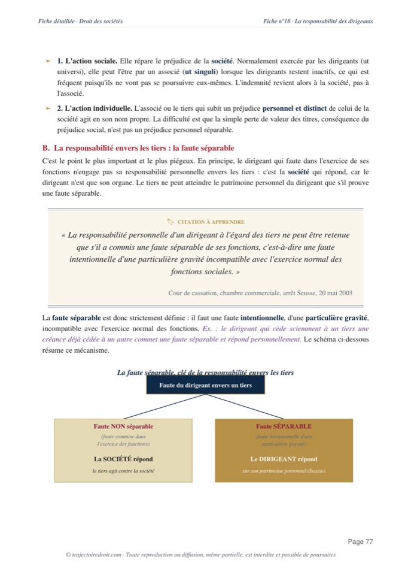

L'arrêt Bowater du 20 mai 1986, expliqué simplement
L'arrêt Bowater, rendu par la chambre commerciale de la Cour de cassation le 20 mai 1986, pose le critère qui gouverne encore aujourd'hui la validité des promesses de rachat de titres à prix garanti face à la prohibition des clauses léonines. Cette fiche reprend les faits, l'attendu exact et le revirement qu'il opère, jusqu'à sa réaffirmation par la Cour en 2023.

L'essentiel en une phrase
La chambre commerciale de la Cour de cassation, le 20 mai 1986 (pourvoi n° 85-16.716), juge que la promesse de racheter des droits sociaux à un prix minimum garanti n'est pas une clause léonine interdite par l'article 1844-1 du Code civil. Est seule prohibée la clause qui porte atteinte au pacte social, c'est-à-dire à la répartition des bénéfices et des pertes entre associés. Une promesse qui organise, à un prix librement convenu, la transmission de titres échappe à cette interdiction.
Cet arrêt porte le nom de la société Bowater, la maison mère du groupe qui rachetait les titres en cause. Il a opéré un revirement décisif, en substituant le critère de l'objet de la convention à celui de son effet, un choix de méthode qui gouverne encore aujourd'hui tout le contentieux des promesses de rachat entre associés.
Bowater limite la promesse à un cas précis. Elle échappe à la prohibition des clauses léonines seulement si son objet est la transmission de titres, peu importe qu'elle protège en pratique le cédant contre une baisse de valeur. La réserve de fraude reste toujours applicable, et la jurisprudence postérieure a ajouté d'autres garde-fous, notamment l'exigence d'un aléa réel.
M. du Vivier cède plus des deux tiers des actions d'une société à la société Iéna Industrie, filiale du groupe Bowater, avec des promesses réciproques sur le reste du capital.
Bowater souscrit une nouvelle promesse d'achat, avec un prix minimum garanti de 5 millions de francs, quelle que soit l'évolution de la valeur des titres.
La cour d'appel de Paris rejette la nullité de la clause et condamne Bowater à payer le prix minimum garanti.
La Cour de cassation rejette le pourvoi de Bowater et pose le critère de l'objet contre celui de l'effet.

Fiche complète
Droit des sociétés L3
Les faits, une promesse de rachat à prix plancher
Par un acte du 20 avril 1973, M. du Vivier cède, en son nom et au nom d'autres actionnaires, plus des deux tiers des actions de la société A. de Luz Fils à la société Iéna Industrie, filiale du groupe britannique Bowater. Cette cession s'accompagne de promesses réciproques d'achat et de vente portant sur le reste du capital, avec un premier délai d'option fixé en 1977.
Le 11 novembre 1975, Bowater souscrit une nouvelle promesse d'achat, cette fois avec un délai d'option reporté à 1982. Cette promesse fixe le prix de rachat par référence à la valeur nette de l'actif de la société, tout en garantissant un prix minimum de 5 millions de francs, quelle que soit l'évolution réelle de cette valeur. M. du Vivier est donc assuré de revendre ses titres à ce prix plancher, même si la société perd de sa valeur entre-temps.
Quand M. du Vivier lève l'option en 1982, un désaccord naît sur le prix. Il réclame le paiement du prix minimum garanti de 5 millions de francs. Bowater refuse, en soutenant que la clause fixant ce prix plancher est nulle, comme contraire à l'article 1844-1 du Code civil.
La procédure et le pourvoi
La cour d'appel de Paris, dans un arrêt du 4 juillet 1985, rejette cet argument et condamne Bowater à payer le prix minimum garanti. Bowater se pourvoit alors en cassation, avec trois moyens distincts.
Le premier moyen, celui qui intéresse le droit des sociétés, reproche à la cour d'appel de ne pas avoir vérifié si le prix minimum garanti avait pour effet de libérer M. du Vivier de toute contribution aux pertes de la société, en violation de l'article 1844-1 du Code civil. Le deuxième moyen soutient qu'une lettre postérieure, du 28 septembre 1976, vaudrait renonciation implicite à ce prix minimum. Le troisième critique le montant des dommages-intérêts alloués, insuffisamment motivé selon Bowater. Seul le premier moyen a une portée pour la matière. C'est sur lui que la Cour de cassation construit son raisonnement de principe.
Le problème de droit
Une promesse de rachat de droits sociaux qui garantit à son bénéficiaire un prix minimum, quelle que soit la baisse de la valeur réelle des titres, doit-elle être annulée comme une clause léonine au sens de l'article 1844-1 du Code civil ? Autrement dit, faut-il regarder si la clause protège en pratique le cédant contre les pertes de la société, ou seulement ce qu'elle organise sur le papier ?
La solution de la Cour de cassation
La Cour de cassation rejette le pourvoi de Bowater. Elle juge que la cour d'appel n'avait pas à vérifier si le prix minimum garanti libérait M. du Vivier de toute contribution aux pertes, dès lors qu'elle avait constaté que la convention litigieuse organisait une cession de titres.
L'attendu de principe
« Est prohibée par l'article 1844-1 du Code civil la seule clause qui porte atteinte au pacte social dans les termes de cette disposition légale ; qu'il ne pouvait en être ainsi s'agissant d'une convention, même entre associés, dont l'objet n'était autre, sauf fraude, que d'assurer, moyennant un prix librement convenu, la transmission de droits sociaux. »Cass. com., 20 mai 1986, n° 85-16.716, Bowater
Le sens du raisonnement, l'objet contre l'effet
L'article 1844-1 du Code civil pose une règle et une exception. Son premier alinéa dit que la part de chaque associé dans les bénéfices et sa contribution aux pertes se calculent en principe à proportion de sa part dans le capital social, sauf clause contraire. Son second alinéa répute non écrite la clause qui attribue à un associé la totalité du profit ou l'exonère de toutes les pertes, ainsi que celle qui l'exclut totalement du profit ou met à sa charge toutes les pertes. Cette clause s'appelle la clause léonine, du nom de la fable où un lion, en partageant une proie, s'en attribue la totalité. Un associé se taille alors la part du lion, en gardant tout le gain ou en évitant toute perte, au détriment des autres.
La sanction reste mesurée. La clause léonine reste seulement réputée non écrite, sans emporter la nullité de la société entière. La société survit, et seul l'avantage abusif disparaît. Cette interdiction protège un principe plus large, posé à l'article 1832 du Code civil, à savoir que tout associé s'engage à partager les bénéfices et à contribuer aux pertes. Ce risque partagé fait la nature même de la société, et la distingue par exemple du prêt, où le prêteur récupère son argent quoi qu'il arrive.
La promesse de rachat à prix plancher ressemblait, en apparence, à une clause léonine déguisée. Elle garantissait à M. du Vivier un prix minimal, quelle que soit la baisse de valeur des titres, ce qui le mettait à l'abri d'une perte que tout associé doit en principe supporter. La jurisprudence antérieure avait d'ailleurs déjà censuré ce type de promesse, dès un arrêt du 10 février 1981 (n° 79-13.376), en s'attachant précisément à cet effet protecteur.
La Cour de cassation retient pourtant, dans l'arrêt Bowater, l'objet de la promesse comme critère, et non plus son effet. Peu importe qu'elle protège en pratique le cédant contre une perte de valeur. La convention organise, sur le fond, une cession de titres à un prix librement convenu, et non une répartition des bénéfices et des pertes entre associés. La Cour ajoute une réserve importante. Cette solution s'efface dès qu'il y a fraude, c'est-à-dire dès que la cession a été montée dans le seul but de contourner l'interdiction de l'article 1844-1. Ce déplacement de l'effet vers l'objet marque un vrai revirement, car la Cour avait auparavant retenu un critère encore plus fragile, la simple localisation de la clause dans les statuts ou en dehors (arrêt du 15 juin 1982), avant d'abandonner ce critère formel au profit d'un critère de fond.
Tu révises ton droit des sociétés ?
Reçois gratuitement mon guide « Réviser le droit sans s'épuiser ». La méthode que mes élèves utilisent pour retenir les grands arrêts sans les bachoter la veille.
Pourquoi cet arrêt gouverne-t-il encore le financement des sociétés ?
La chambre commerciale a repris la formule de Bowater pour valider les promesses de rachat dans les grands montages financiers, en jugeant qu'une cession à prix convenu reste sans incidence sur la participation aux bénéfices et la contribution aux pertes dans les rapports sociaux. Elle a d'abord confirmé cette solution dans l'arrêt du 10 janvier 1989, dit Jallet (n° 87-12.155), qui juge étrangère au pacte social une promesse d'achat de titres à un prix déterminé.
L'extension a ensuite gagné les opérations de portage. Dans l'arrêt du 24 mai 1994, dit SDBO (n° 92-14.380), la Cour valide une promesse de rachat parce qu'elle s'accompagne de promesses croisées d'achat et de vente en termes identiques. Le porteur de titres subit malgré tout un aléa réel, car si les titres montent, il doit quand même les céder au prix convenu et perd la plus-value. Cet aléa résiduel suffit à écarter la clause léonine.
L'extension a ensuite touché le capital-investissement, où un bailleur de fonds entre au capital d'une société pour financer son développement, avant de revendre sa part à un prix convenu d'avance. Dans les arrêts Belkhelfa du 16 novembre 2004 (n° 00-22.713) et Bourgoin du 27 septembre 2005, la Cour valide la promesse faite à ce type d'investisseur, qui entre au capital pour récupérer sa mise plutôt que pour participer durablement à la vie sociale. Elle a toutefois maintenu un garde-fou, qu'on appelle la fenêtre de tir. Dans l'arrêt Textilinter du 22 février 2005, elle valide une promesse parce que le bénéficiaire ne peut lever l'option que pendant un délai limité, en dehors duquel il reste exposé au risque de dépréciation des titres. La première chambre civile a fini par reprendre cette même exigence en 2008 (n° 06-20.806), après avoir longtemps résisté au critère de l'objet en s'attachant elle-même à l'effet de la clause, dans des arrêts du 22 juillet 1986 puis du 7 avril 1987 (dit Levêque-Houist).
La chambre commerciale a encore appliqué le même critère très récemment, dans un arrêt du 21 juin 2023 (n° 21-21.875). Elle y juge qu'une promesse de cession d'actions à un prix déterminé, consentie en cas de départ d'un dirigeant, reste étrangère au pacte social, peu important que le prix de cession soit égal au prix de souscription des actions. Bowater continue donc, près de quarante ans plus tard, de fixer la frontière entre la cession de titres et la répartition des résultats de la société.
Si tu veux revoir tout le programme de la matière, la personnalité morale, les organes de direction et les grandes structures sociétaires comprises, ma fiche de droit des sociétés L3 reprend chaque notion et chaque grand arrêt à connaître, avec la méthode du cas pratique appliquée pas à pas. Sur un autre grand arrêt de la matière, va voir ma fiche sur l'arrêt Fruehauf, qui pose le principe fondateur de l'intérêt social, ou celle sur l'arrêt Iron Mountain, sur la transmission de la responsabilité pénale en cas de fusion-absorption.
La critique doctrinale
La solution ne fait pas l'unanimité, même après près de quarante ans d'application. Le principal reproche porte sur le critère de l'objet lui-même. Renaud Mortier, dans une étude consacrée au sujet, observe que ce détour par l'objet revient souvent à neutraliser l'article 1844-1, dans la mesure où un associé peut être mis à l'abri des pertes en pratique, ce que le texte voulait justement empêcher. Il relève que la réserve de fraude suffit en réalité à protéger contre les abus, l'action en fraude permettant toujours de faire échec à une clause montée pour tourner la loi, ce qui rend la rigueur affichée du critère de l'objet en partie illusoire.
La construction jurisprudentielle a aussi suscité une vraie divergence entre chambres de la Cour de cassation. Pendant plusieurs années après Bowater, la première chambre civile a continué de raisonner à partir de l'effet de la clause, tandis que la chambre commerciale s'en tenait à son objet. F. Deboissy, G. Wicker, J. Valiergue, J.-C. Pagnucco et R. Raffray, dans leur chronique de droit des sociétés, relèvent que cette divergence a nourri une vraie insécurité pour les praticiens, qui ne savaient pas toujours quel critère s'appliquerait à leur montage selon la chambre saisie.
La solution est malgré tout saluée pour son efficacité pratique. Elle protège des montages financiers très répandus, le portage et le capital-investissement notamment, où la garantie d'un prix de sortie conditionne souvent la décision même d'investir. Sans le critère de l'objet posé par Bowater, ces opérations auraient perdu la sécurité juridique qui en fait l'intérêt, ce qu'une bonne partie de la doctrine juge économiquement nécessaire.
Comment utiliser cet arrêt dans une copie
Dans un cas pratique. Tu cites Bowater dès qu'un énoncé décrit une promesse de rachat ou de vente de titres entre associés, assortie d'un prix minimum ou d'un prix fixé à l'avance. Tu vérifies d'abord ce que la convention organise réellement, une cession de titres ou une répartition des bénéfices et des pertes. Tu regardes ensuite si un aléa réel subsiste pour le bénéficiaire de la promesse, notamment une fenêtre de tir limitée dans le temps, et tu écartes la clause léonine seulement si l'objet de la convention reste la transmission de droits sociaux, sauf fraude.
Dans une dissertation sur la protection de l'associé. Cet arrêt se compare utilement à l'article 1844-1 lui-même, qui protège la vocation de chaque associé aux pertes, et à la jurisprudence sur l'abus de majorité, qui protège à l'inverse l'intérêt social contre une décision prise au détriment de certains associés. Les deux logiques limitent la liberté contractuelle des associés, mais Bowater le fait en limitant le champ de la prohibition légale, là où l'abus de majorité sanctionne un usage déloyal du pouvoir de décision. Pour la méthode complète, regarde ma page sur la fiche d'arrêt et celle sur le commentaire d'arrêt.
Les erreurs à éviter avec l'arrêt Bowater
- Croire que toute promesse à prix garanti est automatiquement valable. Bowater pose un critère, l'objet de la convention, et non un blanc-seing. La réserve de fraude reste toujours applicable, et la jurisprudence postérieure a ajouté l'exigence d'un aléa réel dans certains montages.
- Confondre le critère de l'objet avec l'ancien critère de la localisation de la clause. Avant Bowater, la Cour distinguait selon que la clause figurait dans les statuts ou dans un acte séparé (arrêt du 15 juin 1982). Bowater abandonne ce critère formel pour un critère de fond, l'objet réel de la convention, indépendamment de l'endroit où elle est écrite.
- Ignorer la divergence entre chambres. La première chambre civile a longtemps raisonné à partir de l'effet de la clause, avant de rejoindre la position de la chambre commerciale sur l'exigence d'un aléa réel. Une copie qui présente le critère de l'objet comme une évidence partagée par toute la Cour de cassation depuis toujours manque cette nuance.
- Oublier la portée du terme « pacte social ». Seule est prohibée la clause qui porte atteinte au pacte social, c'est-à-dire à la répartition des bénéfices et des pertes entre associés. Une clause qui organise seulement la sortie d'un associé, par une cession de ses titres, reste étrangère à ce pacte social.
Questions fréquentes
Que dit l'arrêt Bowater sur les clauses léonines ?
L'arrêt Bowater est-il toujours d'actualité ?
Comment citer l'arrêt Bowater en copie ?
Quelle différence entre le critère de l'objet et celui de l'effet dans les clauses léonines ?
Une clause de earn-out ou un prix plancher dans un pacte d'actionnaires reste-t-il valable après Bowater ?

Le droit des sociétés va bien au-delà des clauses léonines.
Ma fiche de droit des sociétés L3 reprend chaque grand arrêt et chaque notion, expliqués simplement et prêts à servir en commentaire comme en dissertation.
Voir la fiche de droit des sociétés L3